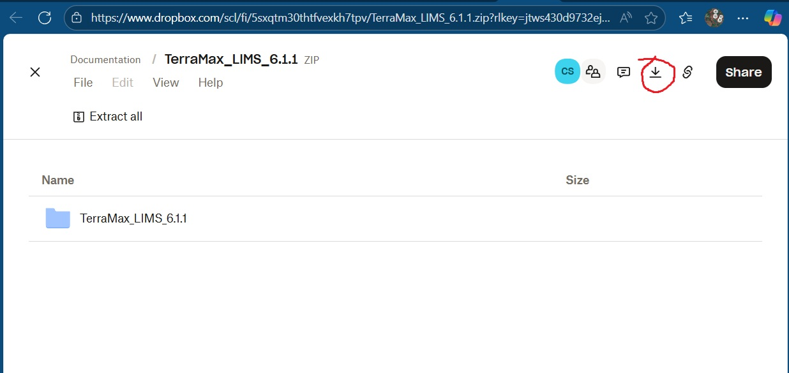
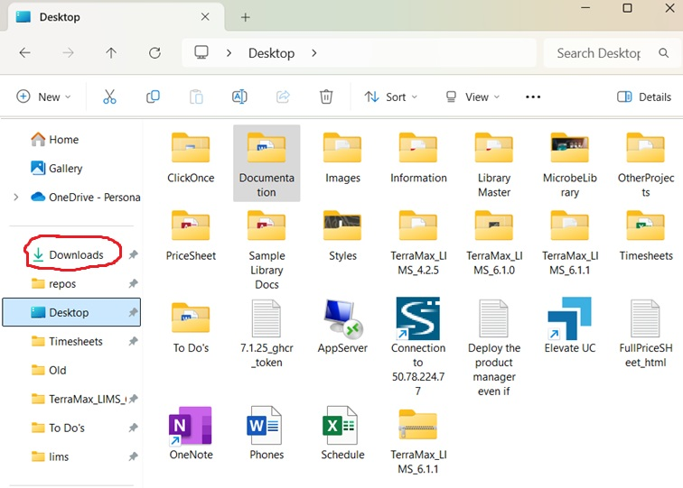

Deployment
This document explains step-by-step how to get the LIMS application set up on your computer, and then gives a brief summary of what files have been installed on your computer, how they interact, and how to delete them safely.
How to set it up
Updating to later versions is essentially the same process as installing. Because there are only two files, it’s just a matter of deleting the old ones and replacing them with new.
1. DropBox
- When I create an update, I put the
LIMS.exeandconfig.jsonfile into a single zipped folder. Then I upload this folder to my personal DropBox so I can give people download links.- This isn’t the most streamlined or professional system. I do it this way because I like the clarity about what you’re actually putting on your computer.
2. Download Zipped Folder
- I will send an email containing a download link to all people who need the update. Click the link, and it will open a page like this:

- Do not open the folder; this is harmless, but it won’t accomplish anything, and will just confuse the issue.
- Rather, click on the download arrow button circled in the image above. THIS will properly download the zipped file onto your computer, into the
Downloadsfolder. - It may pop up a dialog box asking you to log in or create an account. This is an irritating misdirect; you do not have to make an account. There should be a link at the bottom of the dialog to skip or continue on to download.
- Normally downloading executables from a link is a terrible idea, so only do this when it comes directly from me and has some explanation.
3. Prepare Local Folder
- Open the folder where you have the older version, and delete the contents so that it’s empty. If you haven’t installed LIMS before, create a new folder somewhere you can remember (this can just be on the Desktop) and name it “LIMS” or something similar.
- You can create a shortcut to the application for daily use, but I deliberately kept the files simple so that you could manage moving and deleting them yourself
4. Find Zipped Files in Downloads
- Open the
Downloadsfolder. You can find it by opening a File Explorer window (the folder icon in the bottom tray); theDownloadsfolder should be near the top of the folders in the lefthand panel.

- The zipped folder you just downloaded should be at the top of the files inside the Downloads folder, named something like
TerraMax_LIMS_6.0. Open the zipped folder and find the two files inside.- You cannot run the LIMS.exe file from here inside this zipped folder, because it’s currently compressed
5. Extract Zipped Contents to Local Folder
- Extract/unzip the files by simply copying them both, and then pasting them into the empty “LIMS” folder from step 3
- There might be some small lag for the files to fully transfer, but it should work right away. As soon as your computer seems done with the task, try to open the LIMS file. If it doesn’t work, ask for help.
How it works
LIMS.exe and config.json need to be kept together in the same folder in order to work together.
When the LIMS application starts up, the first thing it does is look for the config file. LIMS does almost all the work, but config.json contains a few instructions about settings and about how to connect to the database. Without a config file, LIMS will default to running in Test Mode, using internal test data instead of connecting to the real database.
When you change settings from within LIMS, it saves those changes by writing them to the config file. It can’t change its own code once it’s compiled into a single-file .exe, so the external config file is necessary to make settings changeable.
Beyond these two files, nothing else is added or changed; LIMS doesn’t install hidden components. If you delete the two files, there will be no other trace left on your computer.
To uninstall, you only need to manually delete these two files.